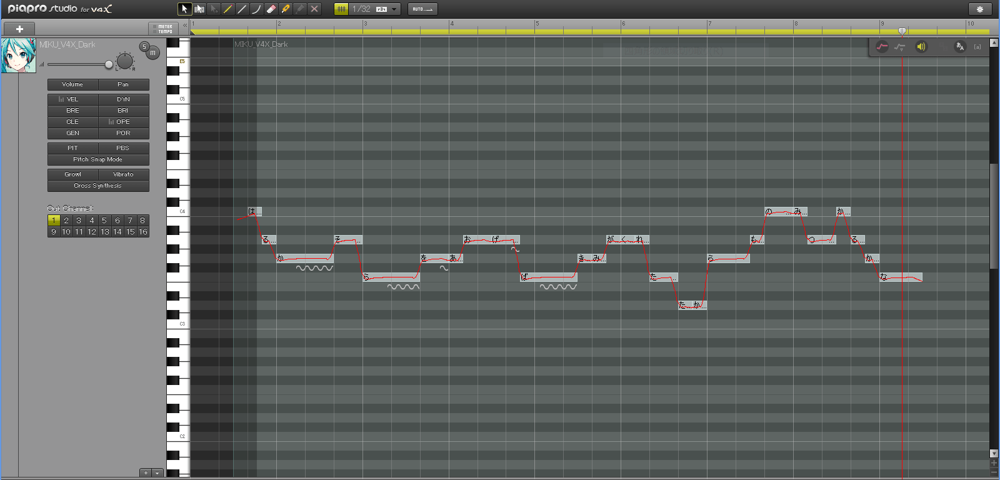
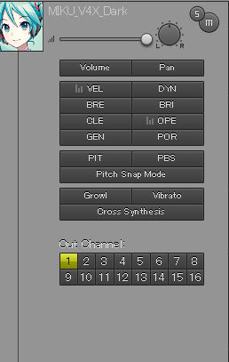
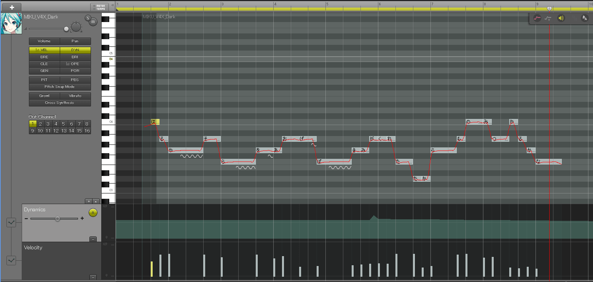
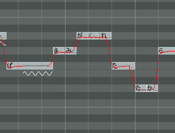

皆さんこんにちばんわ心太(しんた)です。本日紹介しますのはVOCALOIDの簡単な調教のしかたと歌詞のイメージについてです。それでは早速やっていきましょう。
ではまず調教の話をしていきたいと思います。今回は僕がVOCALOIDエディター持っていないのでpiapro studioの初音ミクを使います。これは僕がとりあえず打ち込んだ歌詞とメロディです。

初音ミクはデフォルトで打ち込みをするとraと発音するようになっています。なので僕は直観でしかまともに作れないのでミクちゃんに鼻歌を歌わせるようにまず適当に打ち込んでいきます。そして元から考えていた歌詞やテーマをミクちゃんに言わせてあげて違和感があったら歌詞やメロディを変えるなどの地味な作業を行います。
ここまで来たらまず調教の基本となるベロシティとダイナミクスをいじっていきます。
ベロシティとダイナミクスは主に小さい音が密集しているところに使います。ベロシティとダイナミクスは画像のVELとDYNを押すと出てきます。

まずベロシティについての簡単な説明です。ベロシティを上げると1つ前の音の長さが長くなりベロシティを上げた音の子音が短くなります。逆に下げると1つ前の音の長さが短くなりベロシティを下げた音の子音が長くなります。ただしここで例外があります。ベロシティは子音の音をいじるものなので母音のベロシティをいじっても変化がありませんこんな時に使うのがダイナミクスです。
ダイナミクスを使うことで母音に使えないベロシティと同じような効果やVOCALOIDが苦手とする破裂音の強調などを行うことができます。この2つをいじるとこのような感じになります。
https://soundcloud.com/emon65/adbent1
これがベロシティとダイナミクスをいじっただけのやつです。それでは次に行きましょう。
今のVOCALOIDはすごくて何もいじらなくても十分なんですが簡単にコブシを作れるのでどうせなら作りましょう。そもそもコブシとはなんぞやとわかりやすい例でいうと演歌歌手なんかが歌う時に音程部分的に上下に揺らすことで感情表現をすることです。そんなのVOCALOIDでできるの？と思うかもしれませんが簡単にできます。画像のように音程が下から上に流れる部分があります。

このノートにこのような仕掛けをするだけです。

ここの歌詞は「きみがくれたたから」という部分です。この歌詞ノートを上がる部分の一個前のノートの語尾を母音にして上がった後のノートを子音にすることでコブシを作りより人間らしい発音にすることが可能です。これはコブシも追加したやつです。
https://soundcloud.com/emon65/siryou
今回のVOCALOIDの調教についてはここまででおわりにしたいと思います。続きまして歌物に欠かせない歌詞のイメージについて簡単に紹介したいと思います。
歌詞やの作り方は人それぞれ違うと思います。なのであくまで一例として今回の記事を読んでいただけると幸いです。例として前回のDM合作のソフメロディの歌詞を使います。
大きな夢を描いてさ 今日も僕は空を見上げ歩いてた
独りじゃできないことばかりを 僕は描いて歩いていた
独りではできなくても 僕がいるよ
さあ空を駆け抜けよう
ソフトメディア あなたがいてくれたから僕ら もう何も恐れはしないだろう
ソフトメディア 独りでつまづいても大丈夫 君はもう僕らの仲間さ
独りで描いた夢も 僕のそばには大きな 夢の欠片が広がっている
これはソフメロディの一番の歌詞です。歌詞作るときまずテーマを決めます。今回の場合せっかくなので【ソフトメディア研究会】にしました。しかし研究会という言葉は歌詞に入れると硬い印象が出るのと長すぎると歌詞に入れられない可能性があったので【ソフトメディア】にすることにしました。テーマが決まったので次はそこから連想できる世界観を作っていきます。ソフメロディはソフメに入って間もなくやりたいことはあってもなかなか実行できないそんな淡い青年の心をモチーフにしました。さぁ世界観やテーマも決まったのでいよいよ作っていくわけですが僕はサビから作るのが得意なのでサビから作り始めました。ソフトメディーア・・・違う。ソフートメディア・・・違う。ソフトメーディア・・・これだ!!落ちる天啓ひらめく頭・・・!!かなりいいフレーズができたのでこれを何度か繰り返しみんなの頭に残るようにします。基本サビのフレーズは言いやすく語呂がよく繰り返しやすい言葉がおすすめです。あとは淡い青年の気持ちになって考えていくとうまい具合にできちゃいます。今回は時間がないのでここまで!ではメリークリスマス